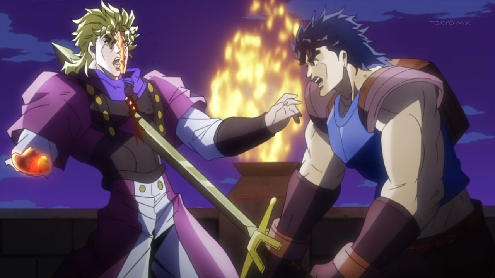
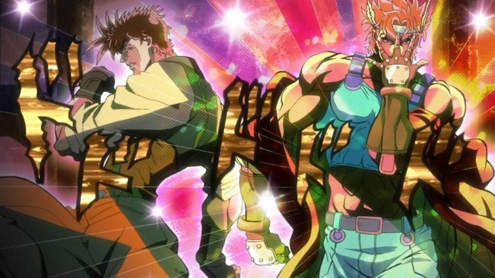
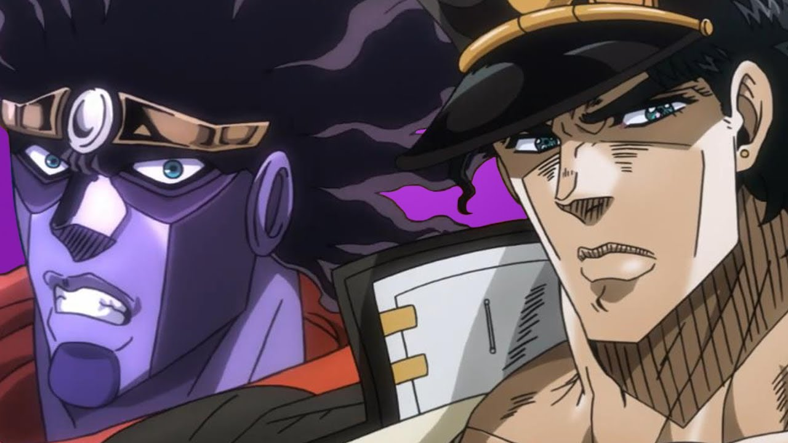
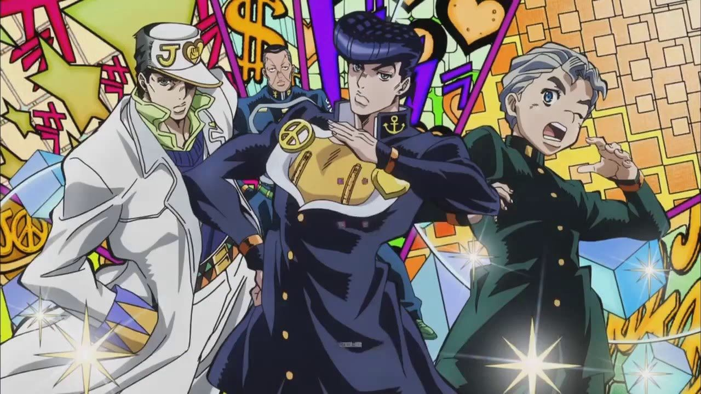
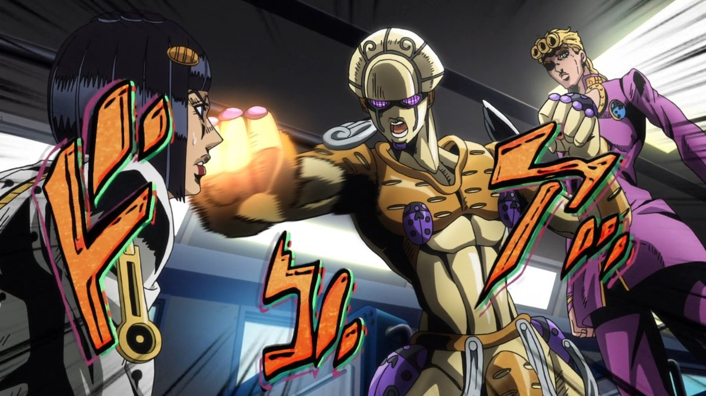

JoJo, Explained!
What is JoJo's Bizarre Adventure?
I'm glad you asked. JoJo's Bizarre Adventure, often known to its fans as simply JoJo, is an manga series Hirohiko Araki. Running consistently since 1987, the manga follows the exploits of multiple generations of the Joestar family, warriors and heroes who live violent and thrilling lives to defend the world from similarly powered people who would use their powers for dark purposes.
Why are you making a website about it?
Because it kicks ass.
Anything else we should know?
Well I've never read the manga so this is all based on the anime adaptation. I'm not an expert. Just a fan.
Oh.
Yeah. Let's just get on with it.
Part 1: Phantom Blood
The first, shortest, and probably most straightforward arc of the series, Phantom Blood nonetheless deserves credit for starting us on this *ahem* BIZARRE journey (sorry, I couldn't resist). Jonathan Joestar, a noble in Victorian London, through fate or chance finds himself with a new foster brother named Dio Brando. Dio, jealous and malevolent by nature, makes it his mission to usurp Jonathan's status in the Joestar family by undermining and humiliating him at every turn. The brothers wind up on a collision course, Dio becoming a vampire and Jonathan learning to use Hamon, an ancient martial art whose abject purpose is the destruction of vampires. Dio is arguably the most iconic character in the series and JoJo just wouldn't be the same without his arrogant, hateful presence. But things don't really get good until...
Part 2: Battle Tendency
Battle Tendency! Jonathan's grandson Joseph takes center stage in the World War II era section of the show. Unlike Jonathan, Joseph's Hamon capabilities come to him so naturally he does not always know what he's doing. Longer and more involved than Phantom Blood, Part 2 sees Joseph train his skills for ancient vampires who make Dio and his crew look like, uh...weaker vampires. This is where I realized I was in love with the show; Jonathan was a charismatic do-gooder, but Joseph is a funnier, cleverer, and all-around better protagonist to follow. It's fun enough to get a new protagonist every so often just to keep things fresh, but with Battle Tendency we get a new setting, new cast, and really even a new tone. Also, Joseph gets a new frenemy named Caesar who himself is descended of a character from Phantom Blood. Their friendship and rivalry is still one of the best character dynamics in all of JoJo
Part 3: Stardust Crusaders
As much as I love the first two parts, it's fair to say that Stardust Crusaders is a better representation of what JoJo really represents in the public consciousness. Hamon is mostly gone at this point as, for reasons too complex to explain on this mostly spoiler-free page, the Joestar family starts to manifest "Stands," entities that grant them special abilities. Joseph's grandson Jotaro Kujo takes center stage in part 3. When his Stand manifests, so too does his mother's, but her nonviolent nature means the Stand puts her health at risk so he sets off with his grandfather to defeat the enemy causing the events to occur. Why does Stardust Crusaders kick ass? Because Stands make for much more dynamic action and storytelling than the vampire stuff in the first two parts, and because Jotaro and the companions he encounters along the way get into increasingly insane fights over the course of an increasingly insane globe trotting journey. If you like a good fight anime, Stardust Crusaders was made for you. Jotaro himself is maybe not as charismatic as Joseph, but after 48 episodes you grow to at least understand and respect his unflinching badassery in a story that gets more complex and darker as it goes.
Part 4: Diamond is Unbreakable
Some would say Part 4 is when things get weird. Following Joseph's illegitimate son (yes, Joseph again) Josuke Higashikata in the fictional Japanese town of Morioh, Diamond is Unbreakable is at first a story about what happens when Stand users start appearing out of nowhere in a normal town (people get hurt), and evolves into a search for a serial killer who has been rotting the town from the inside in secret for decades. Despite that storyline, Part 4 is much lighter in tone than the preceding arc due to Josuke's winning personality and charming group of friends - just don't make fun of his hair. After his grandfather is murdered by an enemy Stand user, Josuke declares himself the unofficial protector of Morioh in his memory, and along with his Stand Crazy Diamond he proves himself more than equal to the task.
Part 5: Golden Wind
I finished Part 5 while I was working on making this page. In this one the main character is Dio's son, but he's also kind of Jonathan's son, and he's really more of a Joestar for a lot of reasons but he also has the same catchphrases as Dio, and he looks more like Dio than Jonathan, and he's also short and skinny compared to the other JoJos. His name is Giorno Giovanna and he lives in Naples. He wants to join the mafia so that he can destroy it from within and create a more noble crime enterprise to take its place. He joins a group of gangsters who ultimately (mostly) join his crusade when their boss proves himself to be evil. They kill a ton of gangsters with their Stands (Giorno's is called Gold Experience), they give righteous speeches, and they look good as hell doing it. The first thing I did once it was over was start the first episode again.
Jojos, Ranked!
Giorno > Jotaro > Joseph > Josuke > Jonathan
Top Five Coolest Stands!
- The Hand
Josuke's friend Okuyasu swipes his right hand and things are removed from this world - Sticky Fingers
Giorno's boss Bucciarati can create zippers that he uses in ridiculous and ridiculously effective ways - Heaven's Door
Josuke's annoying acquaintance Rohan Kishibe turns people into books and can make anything he writes therein become true about them (i.e. "cannot attack Rohan Kishibe") - Gold Experience
Giorno gives life to inanimate objects with a simple touch, also an effective healing method - Killer Queen
The big bad of Diamond is Unbreakable can turn anything into a bomb that destroys anyone who touches it without leaving a trace behind